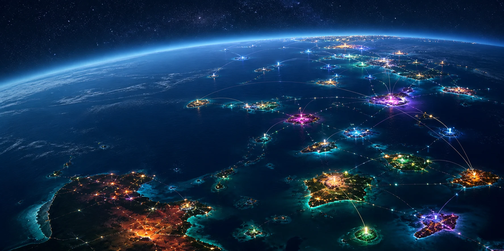

Cultural material
No automatic pooling, scraping or training across nodes.

The wider vision is a constellation of locally shaped intelligences. Each node keeps its own name, purposes, protocols and boundaries while choosing what, if anything, travels between them.
A global network does not require a global template. One place may centre language work, another climate observation, another film, health, learning, infrastructure or something not imagined here.
Local centre
Identity, purpose and decision-making stay with the node and its relationships.
Selective exchange
Methods, public outputs or technical components move only under stated terms.
Right to disconnect
Participation includes pause, refusal, revision and exit.
No automatic pooling, scraping or training across nodes.
No requirement to adopt one brand, legal form or theory of intelligence.
No distant operator quietly becomes the centre of local decisions.
Ambiguity stays visible instead of being normalised into a shared dataset.
Project Atlas maps the broader body of projects Luke has built with agents. It offers context for the larger system without pulling this site away from the one-node process.